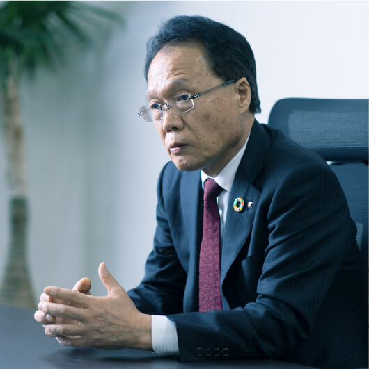

100周年、そしてその先を
目指すための新プロジェクト

─ 岸：御社はこうした取り組みを通じて、どんな未来を思い描いているのでしょうか。
─ 前田：当社は2026年に創業100周年を迎えますが、社会から認められる企業としてその後も事業を継続していく、一つの節目になると考えています。そして、2030年のSDGsの目標達成期限や2050年の国が掲げるカーボンニュートラルの実現目標年といった流れの中で、当社のサステナビリティへの取り組みは当然ですが継続していきます。
─ 岸：長期的な計画やビジョンを実現するために、CSR推進課などの体制変更とは別に、プロジェクトをつくられたそうですね。
─ 前田： “RN THE FUTURE PROJECT”のことですね。2021年に、組織横断型のプロジェクトとして立ち上げました。現在、岸先生を講師としてお招きして実施している「SDGs勉強会」もこのプロジェクトの一部です。今後は、こうした取り組みやESG※7関連の非財務情報はステークホルダーに対してより積極的に発信していくべきだと考え、今年度からこのプロジェクトの一環として「RN サステナビリティ・ブック」を作成しWebでも公開します。
─ 岸：プロジェクトで、特に大切にしていることや目指していることはありますか？
─ 前田：社員一人ひとりが働きがいや生きがいを持って仕事に臨めるようにすることを大切にしています。単なる利益追求ではなく当社ができることをもう一度見直し、社会に認められる企業としてやるべきことを、社員がみな同じ想いのもとでやりがいや誇りを持って働けることが理想です。これができていないと、「社会のため」「環境のため」といった目的が、口先ばかりで実質の伴わない状況に陥ってしまいます。今回の中期経営計画でも、3年間をかけて、この「人」の課題にしっかり取り組みます。
※7 環境（Environment）、社会（Social）、ガバナンス（Governance）の頭文字を合わせた言葉。企業の長期的な成長のためには、経営においてESGの3つの観点から事業機会や事業リスクを把握する必要があるという考え方。

「人」の力で、
より豊かな未来へ

─ 岸：今の大学生をはじめとするZ世代の若者たちは、社長がおっしゃったような「企業姿勢」を、とても重視しているようです。彼らは「この会社はどれだけ社会や環境のことを考え、それをよくするための取り組みをしているか」という点や「どれくらい従業員のことを考えているか」を考えながら就職活動しているそうです。御社が思い描いている未来像は、最終的には次世代の社員にもしっかり受け継がれていくのではないでしょうか。
─ 前田：当社に共感した若者たちが入社し、その共感を原点に社員として活躍してくれるのが理想ですね。建設業界は、どんな案件でも必ず「人」が重要な要素になります。先ほども話題になりましたが、業界は今、担い手不足に苦しんでいます。建設業界には一般的に良いイメージが少ないようです。以前から業界に対しよく言われていた「3K（きつい・汚い・危険）」は、現在ではかなり改善されていますが、まだ社会的に認知されておらず、こうした状況が就職希望者の減少につながっているのかもしれません。
─ 岸：それは大変残念ですね…。
─ 前田：建設業界に携わる人間として、今後は業界の現状に関する情報発信にも積極的に取り組んでいく必要性を強く感じています。自然災害対策やインフラ整備など業界としてやるべきことはまだたくさんあるので、いつまでも人材不足というわけにはいかないのです。例えば築50年以上のマンションは2020年で15万戸以上あると言われ※8、戦後に整備された公共インフラも老朽化が進んでいます。これらに対する維持・改善を進め、安心して暮らせる未来をつくることは、私たちの使命です。そして、それを実現できるのは、やはり「人」なのです。
─ 岸：公共インフラの維持・改善や、サステナビリティ実現のための新たなインフラの構築は、今後の重要な社会課題ですね。この点における建設業界の役割は、当然ながら重大です。
─ 前田：日本においては作り手の意識改革も必要だと感じています。これまで日本の建築物は、30年程度経過したら壊して作り直すのが常識でした。いわば建物の使い捨てです。しかし今後はヨーロッパ諸国のように、最低でも100年以上は使い続けられるものをつくり、次世代にきちんと残していくべきだと思います。これが実現できなければSDGsも脱炭素も目標達成は難しいでしょう。
─ 岸：補修や改善をしながら質を高めつつ、長く使い続けていくという発想が、建設業界にも必要ということですね。
─ 前田：そして、これはあくまで私個人の意見ですが、サステナビリティに取り組んでいくのであれば、SDGsや脱炭素を実現した後の、さらに先の世界まで考えるべきだと思います。環境汚染対策や資源の枯渇問題には今すぐ対策を講じ、行動していかなければ間に合いません。
─ 岸：江戸時代には少ない資源を有効活用するための循環システムが構築されていましたが、同じような仕組みが世界規模で必要になるのかもしれません。
─ 前田：持続可能な社会の実現という点において、江戸時代の人々から学ぶべきことは多いですね。また、この時代に関する本を読むと彼らは資源の節約を楽しみながら暮らしていたように思えます。モノが少ない時代のほうが心は豊かで、逆にモノがあふれている現代は海洋プラスチックなどの社会課題をたくさん抱えてしまっているという…。私が子どもの頃もモノが少ない時代でしたが今より毎日が楽しかったように思えます。
─ 岸：「楽しみながら」は大事なキーワードですね。企業は
「社会課題の解決につながる良質な商品やサービスを通じて利益を上げる」という仕組みを創り出し、社員は社会に役立つことの喜びや楽しさを強く実感できる。そしてその楽しさが、次の問題解決の原動力になる。そんな社会全体の持続可能性の流れの実現に、御社も含めて世界全体が今、取り組み始めているように感じます。
─ 前田：社会はどう変化しどこに向かっていくのか。そして自分たちはどう変化しなければいけないのか。そして、いかに「楽しみながら」未来へつないでいくか。こうした問題意識を社内で共有し、想いを一つにすることが大切だと今改めて思います。
─ 岸：今後のりんかい日産建設の取り組みが、さらに楽しみになりました。まずは「人」の改革からですね。御社の取り組みの進化と深化を期待しています！
※8 国土交通省「築後30、40、50年超の分譲マンション戸数」より

岸 和幸
キシエンジニアリング株式会社
代表取締役
東京都市大学・教育開発機構「ひらめき・こと・もの・ひと」づくりプログラム 特任教授
「人と自然が調和している持続可能な未来の共創」をテーマに、サステナビリティ経営の全般的なサポートや、学生をはじめとする次世代の啓発活動を行っている
りんかい日産建設では、2021年7月より社内縦断研修プロジェクト「SDGs勉強会」の講師を務める。